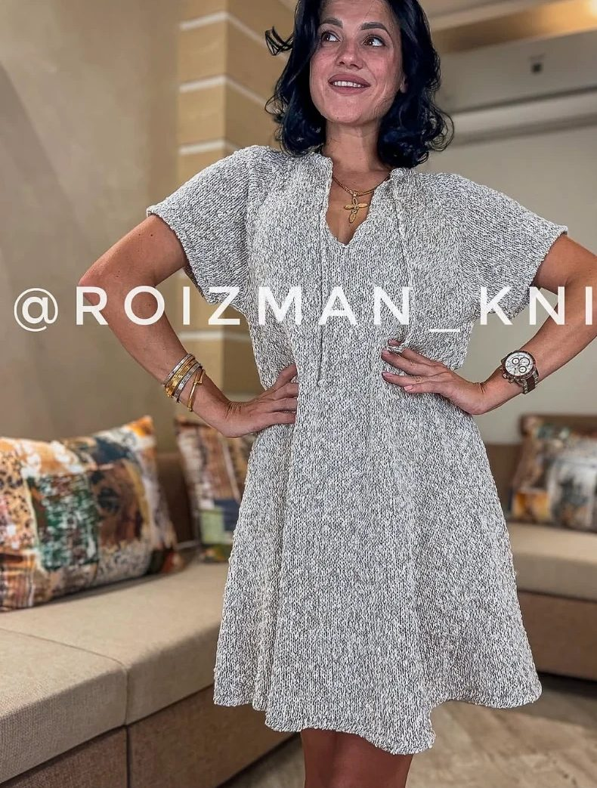

Пошаговая инструкция по мотивам платья @roizman_knitt. Это не авторский мастер-класс, а самостоятельный расчёт. Если нужна оригинальная версия, автор продаёт её у себя в профиле.

Фото: @roizman_knitt (Instagram). Справа — схема с готовыми размерами.
Как устроено платье
Вяжется цельно сверху вниз, без швов: от горловины ростком реглана к подмышкам, дальше по кругу корпус и рукава.
Спереди — разрез у горловины с завязками. Первые 12 см вяжутся поворотными рядами, потом работа замыкается в круг.
Узор — лицевая гладь. Подол, рукава и края разреза отделаны платочной вязкой, она не заворачивается.
Силуэт — трапеция: до линии под грудью прямо, ниже равномерные прибавки до подола.
Мерки размера 52–54 и готовые размеры
Мерка тела
52
54
В готовом платье
Обхват груди
104 см
108 см
116 см (свободное прилегание)
Обхват плеча
≈ 34 см
≈ 36 см
рукав 44 см по кругу
Обхват бёдер
110 см
114 см
на уровне бёдер ≈ 130 см, по подолу 152 см
Длина
от подмышки до низа
68 см (чуть выше колена при росте 165); каждые +3 см — это +8 кругов
Пряжа и инструменты
Пряжа
На фото серо-белый меланж с узелками, похожий на хлопок или хлопковую смесь. Подойдёт пряжа толщины DK, 160–180 м/50 г.
YarnArt Jeans в меланжевом цвете: хлопок 55 %, акрил 45 %, 160 м/50 г. Нужно 9–10 мотков (450–500 г).
Свой меланж из двух нитей. Вяжите в 2 сложения тонкий хлопок, например YarnArt Begonia (169 м/50 г): одну нить белую, другую серую. Нужно по 9–10 мотков каждого цвета. Похожий «пёстрый» эффект получится сам.
Общий ориентир — 1300–1500 м. Точнее посчитайте по образцу (шаг 1).
Инструменты
Круговые спицы 4 мм на леске 80 см: для кокетки и корпуса.
Круговые спицы 4 мм на леске 40 см для рукавов (или вяжите рукава на 80 см методом magic loop).
Маркеры: 4 для реглана, 1 другого цвета для начала круга, ещё 12 для прибавок юбки.
Запасная леска или булавки-держатели для петель рукавов.
Крючок 3,5 мм для обвязки горловины.
Игла с тупым концом, сантиметровая лента.
Обозначения
л.п. / и.п.
лицевая / изнаночная петля
Р
реглан-петля: 1 петля на каждой линии реглана, всегда вяжется лицевой
приб.
прибавка: подхватите поперечную нить между петлями и провяжите скрещённой лицевой (без дырочки)
платочная вязка
в поворотных рядах — все петли лицевые; по кругу — чередуйте круг лицевых и круг изнаночных
Пошагово
1
Образец и плотность
Наберите 30 петель и провяжите 34 ряда лицевой гладью. Постирайте образец и высушите разложенным.
Расчёт сделан на плотность: 20 петель × 28 рядов = 10 × 10 см.
Если у вас получилось иначе, пересчитайте все числа:
петли = нужные см × (ваши петли в 10 см) ÷ 10
ряды = нужные см × (ваши ряды в 10 см) ÷ 10
Расход: взвесьте образец, пересчитайте вес на квадрат 15×15 см и умножьте на 57. Это площадь платья (≈ 12 800 см²).
2
Набор петель
Наберите 96 петель на спицы 80 см, свободно (можно набирать на 2 сложенные спицы). Ряд начинается и заканчивается в центре переда, у разреза. Распределите петли и поставьте маркеры по обе стороны каждой реглан-петли:
16 (половина переда) · Р · 14 (рукав) · Р · 32 (спинка) · Р · 14 (рукав) · Р · 16 (половина переда)
16 + 14 + 32 + 14 + 16 + 4 Р = 96
3
Разрез: 34 поворотных ряда
Изнаночные ряды: 2 л.п. (край разреза), и.п. до последних 2 петель, 2 л.п.
Лицевые ряды: 2 л.п., *лицевые до маркера, приб., Р, приб.* — ×4, лицевые до конца.
→ +8 петель в каждом лицевом ряду.
Провяжите 34 ряда (17 прибавочных), это ≈ 12 см. На спицах:
половины переда по 33 · рукава по 48 · спинка 66 · Р 4 → всего 232 петли
4
Кокетка по кругу
После последнего лицевого ряда разреза не поворачивайте работу. Соедините вязание в круг, следя, чтобы набор не перекрутился. Поставьте цветной маркер — начало круга в центре переда. Края разреза (по 2 платочных петли) дальше вяжите лицевыми.
Круги 1–24: прибавки в каждом 2-м круге у всех четырёх реглан-петель (+8) — 12 раз.
→ половины переда по 45 · рукава по 72 · спинка 90 · Р 4 = 328
Круги 25–32: прибавки в каждом 2-м круге только на переде и спинке (+4) — 4 раза.
Рукава вяжите без прибавок.
→ перед 98 · спинка 98 · рукава по 72 · Р 4 = 344 петли
Примерьте: реглан-линия должна доходить до подмышки, обычно это 22–25 см от основания шеи. Если не хватает, провяжите ещё 2–4 круга без прибавок.
5
Отделение рукавов
49 переда · Р · 72 рукава снять на леску · набрать 16 петель под мышкой ·
Р · 98 спинки · Р · 72 рукава снять на леску · набрать 16 петель · Р · 49 переда.
Реглан-петли переходят в корпус.
На корпусе 232 петли (116 см). Поставьте маркеры в середину петель подмышек — это боковые линии.
6
Корпус и юбка-трапеция
0–10 см от подмышки: лицевая гладь без прибавок (28 кругов).
Прибавочный круг: *19 л.п., приб.* — ×12, 4 л.п. → +12 петель.
Сделайте 6 прибавочных кругов: на 10, 18, 26, 34, 42 и 50 см от подмышки.
В каждом следующем смещайте места прибавок на 9–10 петель, чтобы не было видимых линий.
→ 232 → 304 петли (152 см).
50–65 см: гладь без прибавок.
65–68 см: платочная вязка, 8 кругов (изнаночный круг, лицевой круг — 4 раза).
Закройте петли свободно: спицей на размер больше или эластичным способом, иначе подол стянется. Примерьте на 55 см, чтобы при необходимости изменить длину.
7
Рукава, 2 шт.
72 петли с лески + 16 петель из набора под мышкой + по 1 петле в углах
(чтобы не было дырок) = 90. В 1-м круге убавьте угловые петли → 88 (44 см).
0–7 см: лицевая гладь (20 кругов).
7–9 см: платочная вязка, 6 кругов. Закройте свободно.
8
Горловина и завязки
Обвяжите край горловины крючком 3,5 мм: 1 ряд сбн и 1 ряд рачьим шагом. Край станет устойчивым и не растянется.
Завязки: свяжите 2 шнура I-cord из 3 петель длиной по 35 см. Пришейте их к верхним углам разреза.
9
Финиш
Спрячьте все концы нитей по изнанке.
Постирайте платье вручную или в деликатном режиме при 30 °C. Отожмите в полотенце и высушите разложенным, расправив по схеме.
Перед началом проверьте
Образец связан, постиран и измерен, числа пересчитаны под вашу плотность.